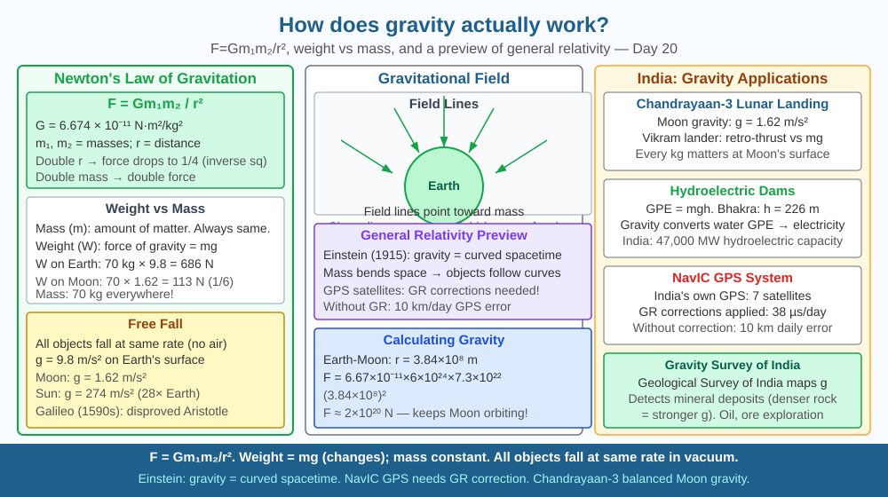

By the end of this lesson, you should be able to state Newton's law of universal gravitation, explain how gravity varies with mass and distance, and predict how force changes when distance triples.
An apple falls from a tree at the same instant the Moon "falls" toward Earth. Newton noticed: both are accelerating toward Earth. What if they're the same force? What if gravity from Earth reaches all the way to the Moon — and to every object in the universe?
Newton's Law of Universal Gravitation: F = G × m₁ × m₂ / r²
Where: - F = gravitational force (N) - G = 6.674 × 10⁻¹¹ N·m²/kg² (universal gravitational constant) - m₁, m₂ = masses of the two objects (kg) - r = distance between their centres (m)
Key relationships: - Force is proportional to EACH mass: double m₁ → double F - Force is inversely proportional to DISTANCE SQUARED: triple r → F decreases to 1/9
Weight vs mass: - Mass: amount of matter (kg). Same everywhere. - Weight: gravitational force (N) = mg. Changes with location (g on Moon = 1.62 m/s², g on Earth = 9.8 m/s², g on ISS = 8.7 m/s²).
Gravitational field: Every mass creates a field extending outward to infinity (weakening as 1/r²). The field at Earth's surface: g = 9.8 N/kg.
Free fall: When only gravity acts, all objects fall with the same acceleration regardless of mass. Galileo showed this; Einstein explained it (equivalence principle).
Think of gravity as ripples spreading out from every mass in the universe — like a stone dropped in water:
The apple and the Moon are both falling toward Earth. The Moon has enough sideways velocity that by the time it falls, Earth's surface curves away — it keeps missing. That is an orbit.
The SVG shows two panels arranged side by side.
The left panel shows the inverse-square law: a point mass M at centre with concentric shells at r, 2r, and 3r. Labels show "F at r," "F/4 at 2r," "F/9 at 3r" — shaded patches on each shell illustrate that the same force is spread over 4× and 9× the area.
The right panel shows Earth, the Moon in its dashed circular orbit, and an apple falling from a tree. Both apple and Moon carry arrows pointing toward Earth, labelled "falling toward Earth — same force, different velocities."
A formula bar at the bottom shows F = Gm₁m₂/r² with each variable briefly annotated.

ISRO uses F = Gm₁m₂/r² for every orbital burn. Chandrayaan-3's Earth-to-Moon trajectory required continuous updating of gravitational forces from Earth, Moon, and Sun — a three-body numerical problem solved in flight. One second of error in the lunar orbit insertion burn would have sent the spacecraft off course.
India's geoid model — the precise shape of Earth's gravitational field — underpins GPS coordinates on 800 million smartphones. The GRACE satellite detects groundwater depletion in Punjab by measuring tiny changes in local gravitational pull: every 1 cm drop in water table is detectable from space.
Calculate your weight in three locations using W = mg:
Now predict: if Earth's radius doubled but its mass stayed the same, what would happen to your weight? The formula F = Gm₁m₂/r² shows that doubling r means r² becomes 4× larger, so F drops to 1/4 of its current value. Check your prediction: if you weigh 600 N now, you would weigh 150 N on a doubled-radius Earth.
This calculation shows why astronauts weigh less at high altitude — they are slightly farther from Earth's centre — even though their mass is unchanged.
Einstein's General Theory of Relativity (1915) replaced Newton's gravitational force with curved spacetime: mass curves space and time around it, and other objects follow curved paths (geodesics) through it. Two consequences Newton's equation cannot predict:
Gravitational time dilation: clocks at lower altitude (stronger gravity) run slower. Without correcting for this, GPS coordinates would drift by ~10 km per day — the correction uses Einstein's equations, not Newton's.
Gravitational waves — spacetime ripples from accelerating masses — were detected by LIGO in 2015 from merging black holes 1.3 billion light-years away (Nobel 2017). Newton's law remains accurate to 1 part in 10⁷ for most engineering calculations.
Predict: Two identical satellites orbit Earth. Satellite A orbits at 400 km altitude (like the ISS) and Satellite B orbits at 36,000 km altitude (geostationary orbit). Using the inverse-square law, compare the gravitational force on each. Then predict which satellite's onboard clock runs faster, and explain why getting this wrong would affect GPS accuracy.
What correctly describes Newton's law of universal gravitation?
Correct answer: C
Why is understanding the mechanism of gravity more useful than just knowing objects fall?
Correct answer: A
If the distance between two objects were tripled, what would happen to the gravitational force between them?
Correct answer: A
A space agency wants to put a satellite into orbit at two different altitudes above Earth. At 400 km altitude, the gravitational acceleration is approximately 8.7 m/s². At 36,000 km altitude (geostationary), it is approximately 0.22 m/s².
Using F = Gm₁m₂/r² and the ratio of distances from Earth's centre (Earth's radius = 6,400 km), verify whether the ratio of gravitational accelerations matches the inverse-square prediction. Then explain why a satellite at 36,000 km takes exactly 24 hours to orbit (appearing stationary above India for communications satellites) while the ISS at 400 km takes only 90 minutes. Use the relationship between gravitational force and orbital speed in your explanation.
Gravity is simultaneously the weakest and the most dominant force in the universe. The electromagnetic force is 10³⁶ times stronger than gravity — a small magnet can lift a paperclip against the entire gravitational pull of Earth. Yet gravity dominates the universe at large scales because it has infinite range, always attracts (never repels), and cannot be shielded. Every atom in Jupiter attracts every atom in the Sun, and those forces add up. Electromagnetism cancels out at large scales because matter is electrically neutral on average. This asymmetry — weak locally, dominant cosmically — means gravity shaped every galaxy, star, and planet in the observable universe while electromagnetic force shaped every molecule in your body.
Gravity is a universal attractive force between all masses — it weakens with the square of distance, which means tripling the distance reduces the force to one-ninth, and this single equation governs everything from a falling apple to the Moon's orbit.